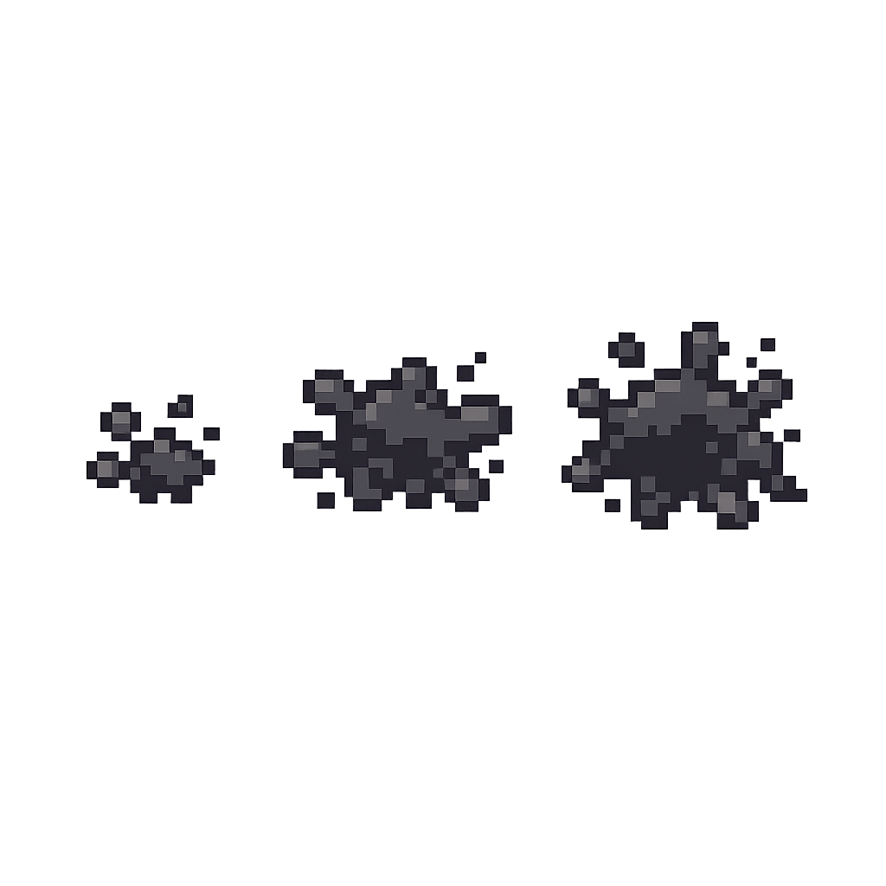

Recommended
One more thing before you get back to work
Sample content remains beneath Ollie's bounded ink layer.
Simulated distracting webpage
This mock content makes it easier to judge coverage, legibility, and whether the intervention still leaves the page escapable. Click and drag Ollie to assess basic viewport-clamped repositioning.
Sample content remains beneath Ollie's bounded ink layer.
A second card provides another visual reference point.
The viewport stays interactive even in the final phase.
Visual verification
Generated samples use the same fixed production assets and event groups as the live intervention. Each row shows only the units introduced in that phase.
